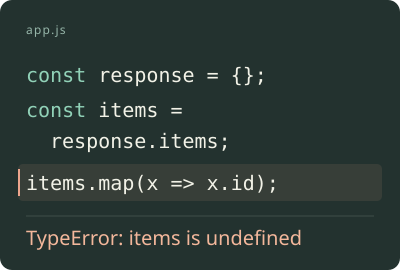

A study in light.
ChatGPT你正在写的草稿
文字留着，发送由你。↑
点一下右侧微图，试试这一小步。
网页交互示意 · 不读取屏幕、不上传、不发送
在屏幕边缘只占一点边缘，
只占一点边缘，
留给你整片思路。
刚截下的几张图，保留原来的模样。
不必翻文件名，也不用展开面板。
想用的内容，安静地在这里。

还是熟悉的截图方式。
从你原本就在用的系统截图开始。
只留下需要的一点。
没有要用的图时，边缘也一起收起。
接下来，依然由你。
保留已有草稿，不替你发送消息。
那些让你停留的片刻每一种好奇，
每一种好奇，
都可以接着聊。
一个灵感，一段报错，或没读懂的一行。
把真正想问的那一处，带进对话。
点一个场景，在上方演示中亲手试试。
开始之前你可能还想
你可能还想
知道的几件事。
现在可以下载吗？
Riftlet 目前正在内部测试，暂未开放公开下载。公开版本与下载信息会在项目 GitHub 页面公布。这里的交互演示用于说明体验，并非 Mac App。
点一下，会直接发送消息吗？
不会。附加图片与发送消息是两件事。附加时图片可能已经上传至 ChatGPT，草稿中的文字和已有附件仍会保留。何时发送，始终由你决定。
支持哪些系统和应用？
首个版本面向 macOS，目前重点测试 Chrome 中的 ChatGPT。最终系统要求和支持范围，会随公开版本明确公布。
截图和反馈会发到哪里？
Riftlet 在本机管理截图副本与历史。你主动附加的图片会传给 ChatGPT；主动提交的反馈会送到开发者反馈服务，可选诊断支持预览。本网页演示仅使用示例内容。
下一句想法，
就在手边。
让每一次接着想，都轻一点。
首个 Mac 版本，正在打磨。